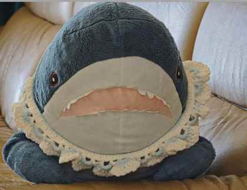

Apple Planet
A PERSONAL PLANET / EST. 2026
WELCOME TO MY LITTLE UNIVERSE
A STRANGE
little world.
生活、阅读、电影、灵感，还有偶然路过的念头。
想到什么，就在这里留下什么。
✳

SHARKY / PLANET RESIDENT NO.001
✳
KEEP
BEING
ODD.
SCROLL TO WANDER ↓
THE PLANET LOG / CHRONOLOGICAL ARCHIVE
最近留下的痕迹
NEWEST FIRST ↓
LOADING THE PLANET…